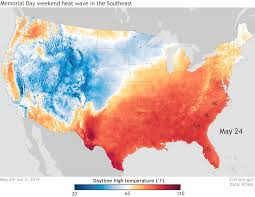

Extreme Heat
Hazard Warnings

- NWS Heat Alerts (Advisory, Watch, and Warning)
- Heat Advisory: Issued within 12 hours of dangerous heat conditions that are expected or occurring, but not severe enough to meet warning criteria. The public is advised to take action, such as staying hydrated and finding cool indoor areas.
- Extreme Heat Watch: Issued when conditions are favorable for an extreme heat event within the next 24 to 72 hours, but its timing and occurrence are still uncertain. This provides lead time for individuals and communities to prepare plans, such as locating cooling centers.
- Extreme Heat Warning: Issued within 12 to 24 hours before the onset of extremely dangerous, life-threatening heat conditions. This is the highest alert level, urging the public to take immediate action, such as avoiding outdoor activities, staying in air-conditioned spaces, and checking on vulnerable neighbors and family.
- The HeatRisk tool
- System Details: This tool combines NWS weather forecasts with CDC health data to determine the risk of heat-related illness at a local level. The risk level is location-specific, as what is dangerous in one region may be normal in another.
- Purpose: It helps public health officials and the general public assess the risk and initiate appropriate preparedness and response actions before a heat event becomes imminent.
- Wet Bulb Globe Temperature (WBGT) Monitoring
- System Details: WBGT accounts for temperature, humidity, wind speed, and solar radiation, providing a comprehensive measure of the heat stress on the human body.
- Purpose: It is used as a preventive measure to inform activity modifications for active populations, such as outdoor workers and athletes, by setting specific thresholds for work/rest cycles or suspending activities as the WBGT rises.
How it works
- High-pressure systems force air downward
- The force prevents air near the ground from rising
- The sinking air acts like a cap
- It traps warm ground air in place
- Without rising air, there is no rain and nothing to prevent it from getting hotter
How to prepare
- Prepare your home for for cooling and heat reduction
- Service your air conditioner in spring, clean AC coils, trim around outdoor units for airflow, and use fans efficiently. If you lack AC, weather-strip doors/windows, cover them with shades/drapes, and use window reflectors (like foil-covered cardboard) to block sun. Reduce indoor heat by using ovens less and cooking cool meals.
- Stay hydrated and dress smart
- Drink plenty of fluids (water, sports drinks) before feeling thirsty, especially if active or outdoors. Avoid alcohol and sugary drinks. Wear loose-fitting, light-colored clothing and wide-brimmed hats to reflect sun and keep cool.
- Adjust activity and seek cool spaces
- Reschedule strenuous activities or errands for early mornings or late evenings. If you must go out, stay in the shade, slow down, and take frequent breaks. Know the location of local cooling centers or public libraries with AC.
- Check on others and know heat illness signs
- Develop a buddy system; check on elderly family, neighbors, and vulnerable individuals. Learn symptoms of heat cramps, exhaustion, and stroke (dizziness, nausea, rapid pulse, confusion). Call 911 immediately if someone shows signs of serious heat illness and begin cooling measures.
Safety Procedures
- Proactive Hydration and Cooling (Personal Preparedness)
- Hydration: The goal is to prevent dehydration before it starts. Individuals should drink water consistently throughout the day, rather than waiting until they feel thirsty. During intense heat, the body loses significant amounts of water and essential salts (electrolytes) through sweat. Water is typically sufficient, but those engaged in strenuous activity may benefit from sports drinks. Crucially, one must avoid sugary drinks, alcohol, and caffeine, as these can lead to dehydration .
- Cooling
- Stay Indoors: The primary action is to stay in an air-conditioned environment. If your home lacks AC, utilize public cooling centers, such as libraries, malls, or designated community centers. You can find locations of local cooling centers by checking your county's public health website or by calling a local help line, such as 2-1-1 .
- Dress Appropriately: Wear lightweight, loose-fitting, and light-colored clothing to reflect sunlight and allow sweat to evaporate.
- Cool Showers/Baths: Regularly taking cool showers or baths helps lower the body's temperature.
- Minimizing Heat Exposure and Modifying Activity (Environmental Awareness)
- Avoid Peak Hours: Limit outdoor activities and strenuous work to the coolest parts of the day, typically before 6 a.m. and after 6 p.m. . The sun is most intense between 10 a.m. and 4 p.m..
- Modify Intensity: If outdoor activity is unavoidable, reduce the intensity and duration. Take frequent breaks in a shaded or air-conditioned area to allow the body time to recover.
- Use Sun Protection: When outdoors, always wear a wide-brimmed hat and use sunscreen with an appropriate SPF rating to prevent sunburn, which affects the body's ability to cool itself.
- "Look Before You Lock": Never leave children or pets unattended in vehicles. Interior car temperatures can reach lethal levels in minutes, even with windows cracked.
- Monitoring Vulnerable Populations and Recognizing Symptoms (Community Response)
- Symptom Recognition: Educate all members of the community on the signs of heat exhaustion and heat stroke.
- Heat Exhaustion signs include heavy sweating, weakness, cool/pale/clammy skin, fast weak pulse, nausea, and fainting . This requires moving the person to a cool place, loosening clothing, and offering sips of water.
- Heat Stroke is a life-threatening emergency. Signs include high body temperature (above 103°F), hot/red/dry skin (no sweating), rapid strong pulse, and potential unconsciousness. Call 911 immediately if these symptoms are present .
- Emergency Preparedness: Have an emergency kit ready with essential items like water, non-perishable food, and a first-aid kit. Charge all electronic devices in case of power outages that may occur due to high AC usage. Information on general heat safety and preparing an emergency kit is available on the CDC website.
Fun Facts
- Heatwaves are caused by high-pressure systems. Heatwaves typically form when a strong, stagnant high-pressure system settles over a region for several days or weeks, creating a "heat dome". This system forces air downward, which compresses and heats the air like a bicycle pump. The high pressure also inhibits cloud formation and wind, allowing intense solar radiation to reach and heat the surface even further.
- Climate change is increasing their frequency and intensity. Scientific evidence, supported by data from agencies like NASA and NOAA, indicates that human-caused climate change is making heatwaves more common, longer, and more severe. Warmer baseline temperatures mean that heatwaves start from a higher temperature point, making record-breaking events more likely.
- Heat is the leading cause of weather-related deaths. In the United States, heatwaves cause more fatalities on average than all other weather-related disasters, such as floods, tornadoes, and hurricanes, combined. Globally, thousands of excess deaths are attributed to heatwaves each year, with extreme events like the 2003 European heatwave linked to over 70,000 deaths.
- High humidity exacerbates health risks. The human body cools itself by sweating, but when humidity is high, sweat evaporates more slowly, making it difficult for the body to regulate its internal temperature. This inability to cool down increases the risk of serious conditions like heat exhaustion and heat stroke, a life-threatening medical emergency.
- Urban areas experience an "urban heat island" effect. Cities, with their dense infrastructure of asphalt and concrete and limited green spaces, absorb and retain more heat than surrounding rural areas. This effect makes heatwaves more intense and dangerous in metropolitan areas, particularly at night when the retained heat is slowly released, preventing overnight cooling.
- Heatwaves severely impact infrastructure and agriculture. Extreme heat can cause physical damage, such as buckling road pavement and warping railway tracks. In agriculture, high temperatures stress crops and livestock, leading to reduced yields and economic losses. Increased demand for air conditioning also strains electrical grids, often resulting in power outages during the most critical times.